1. What is mystery fiction fundamentally about?

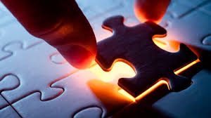
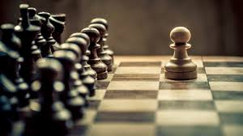
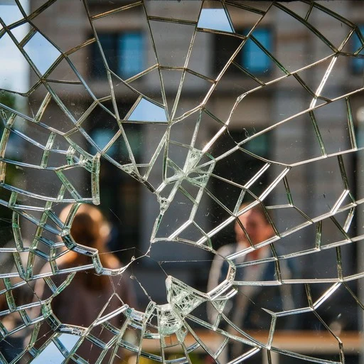
2. People who know you would best describe you as…

3. What is the most important skill a detective has?
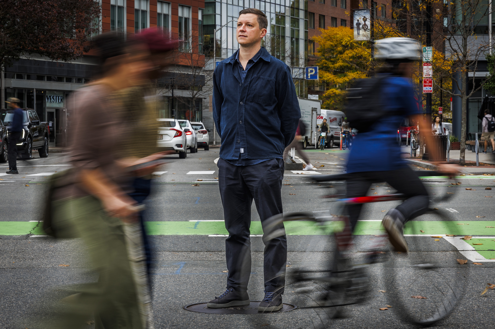
4. Your ideal partner when working a case is…

5. After a witness gives you a detailed account, you…
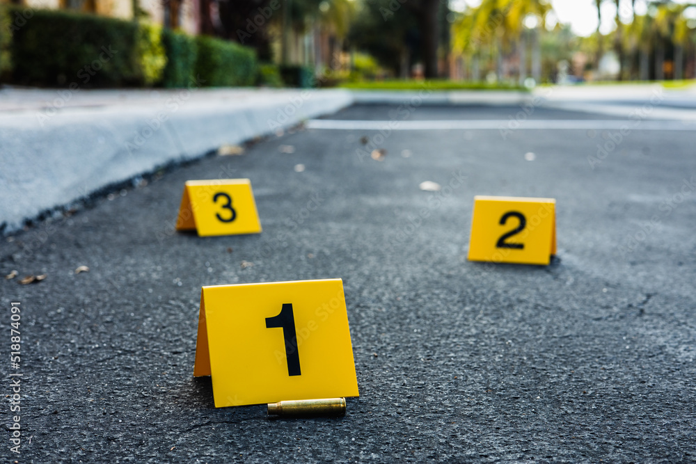
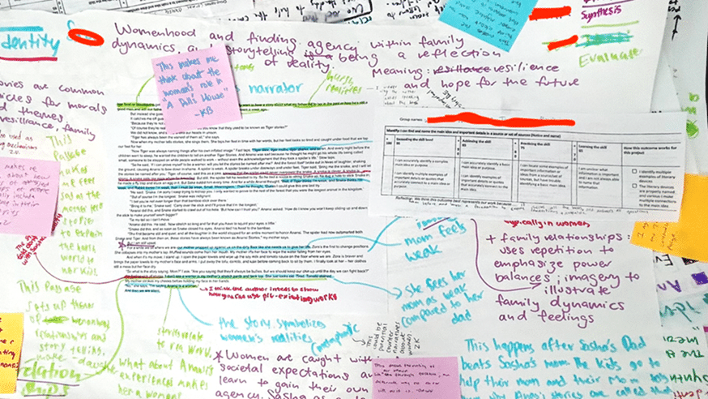
6. What do you do when hitting a dead end in a case?

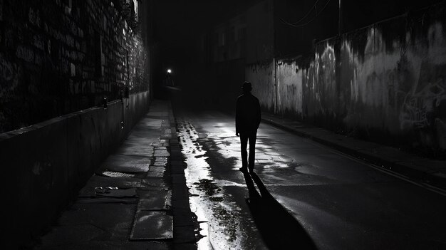
7. Your greatest flaw is…
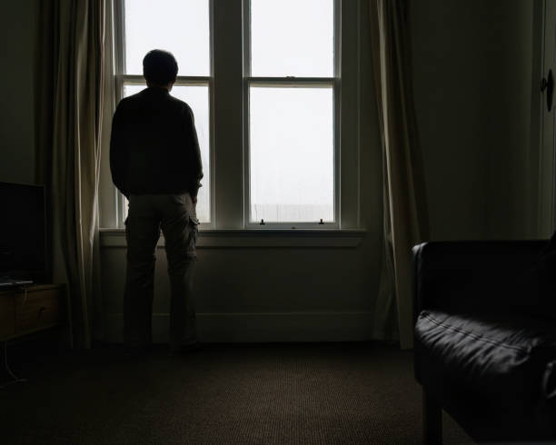
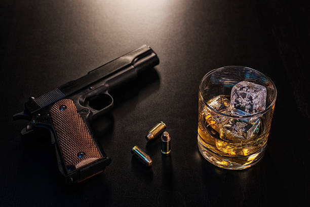
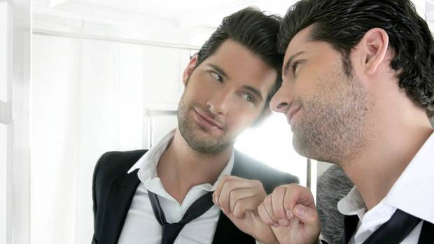
8. A crime has been committed in a locked room with seemingly no entry or exit point, so you start with…
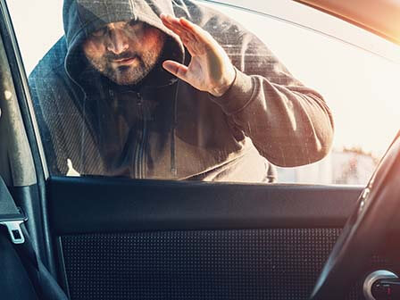
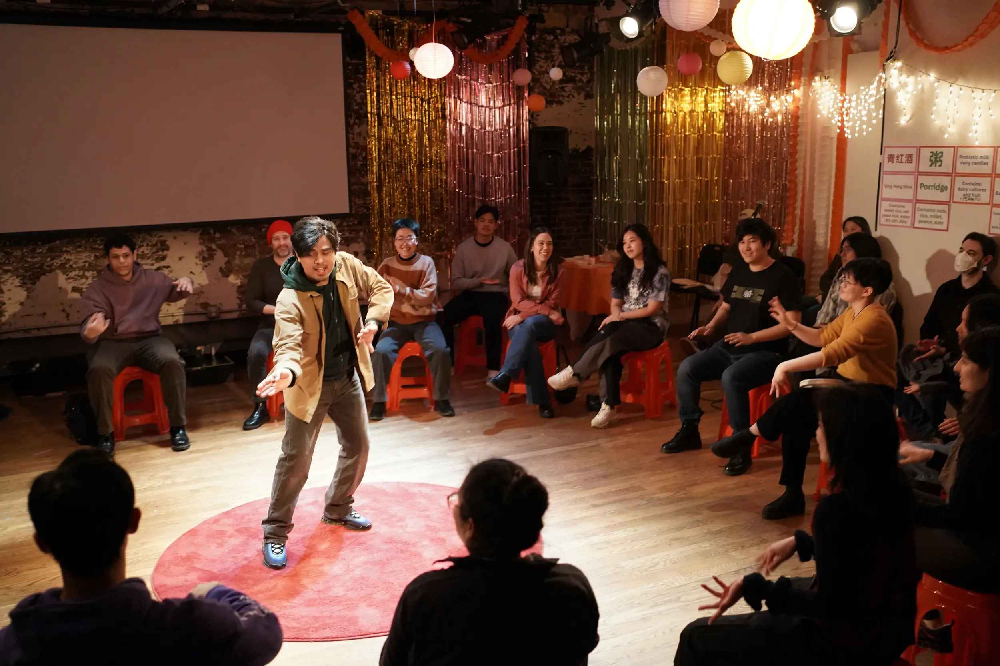
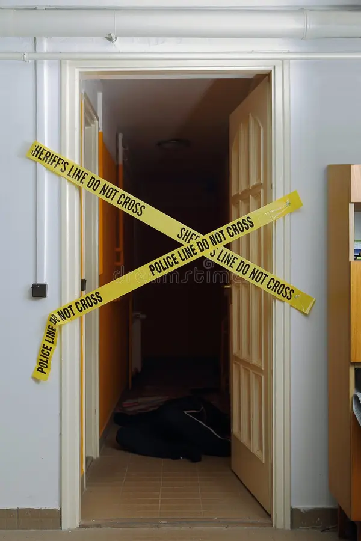
9. What drives you to solve a case?
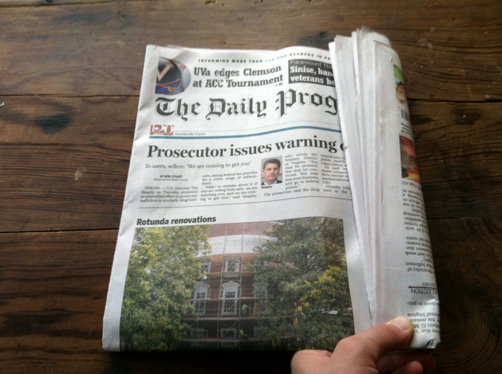
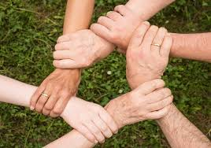
10. When someone is lying to you, you…

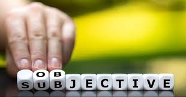
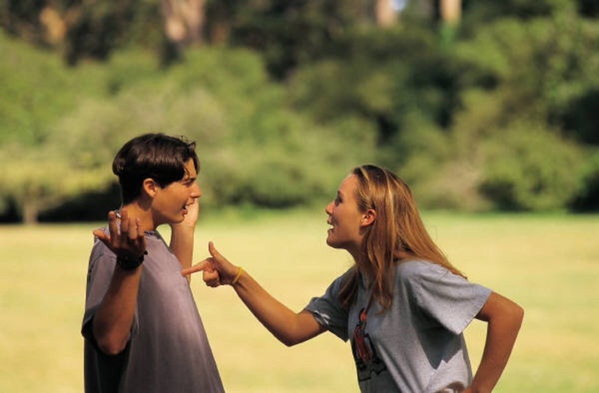
Your result is...